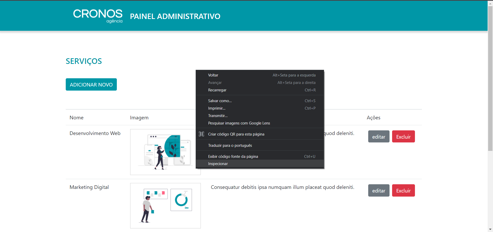
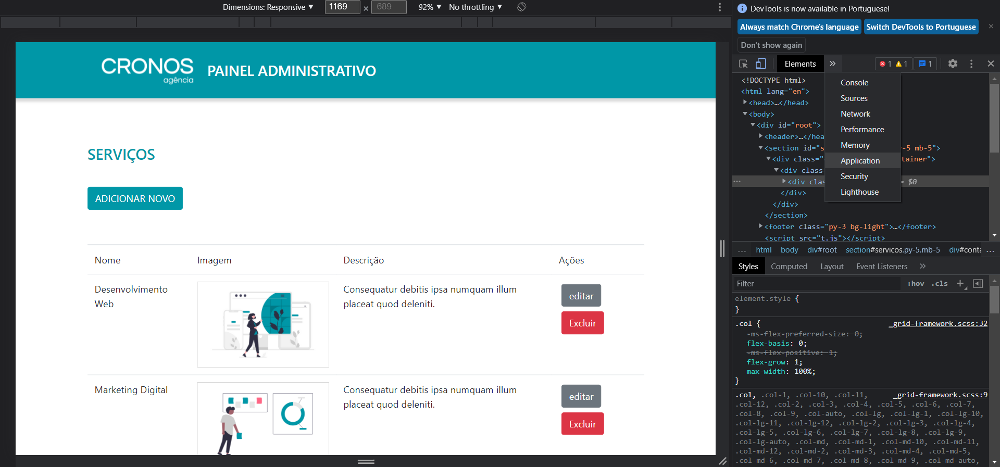
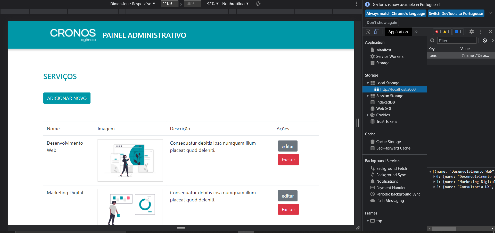

Assim que executar a aplicação deve-se limpara o navegador que está usando. Siga os passos abaixo para prevenir possíveis problemas.
Com a aplicação rodando no seu navegador clique com o botão direito do mause e selecione Inspecionar
A seguir clique na opção Application
Em Local Storage selecione o localhost

E clique no botão que a seta está indicando, para limpara o seu Local Storage e recarregue a página e aplicação irá funcionar perfeitamente
Código da aplicação